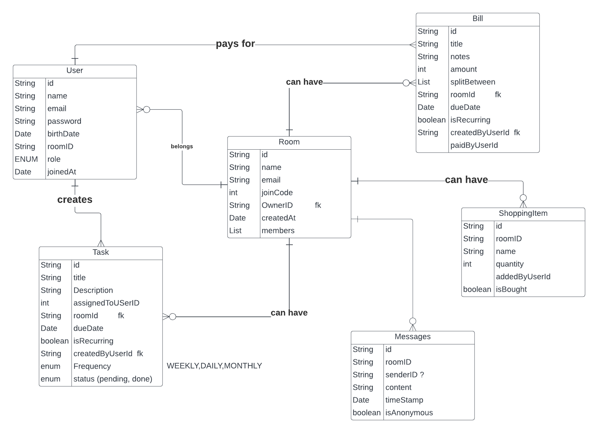

Day 0 - Ideation and Conceptual Modelling
Olaoluwa Oke| 18 June 2025
A few months ago, my roommate left a passive-aggressive sticky note on the fridge because someone kept using his oat milk. There are only two of us. And I’m allergic to oats.
I laughed when I saw it, then got a little sad. Not because of the oat milk (though that stuff is expensive), but because that note felt like a summary of every shared living space I’ve been in: passive-aggressiveness, weird tensions, and just the art avoiding direct conversations.
It reminded me of this boy I lived with during my first year. He always cleaned the bathroom without saying a word. Just did it. Every weekend. One day, I thanked him and he looked genuinely surprised, like no one had ever noticed.
He said, “Well, I figured someone should.”
I asked him why he never asked anyone else to take turns.
He shrugged. “Don’t like fights.”
And that was that. The guy scrubbed toilets in silence for an entire semester because the idea of saying “Can we rotate this?” felt heavier than cleaning
So I decided to look a little into the sociological side of roommate living. Is it mostly personality clashes? Is it unaddressed assumptions? Is it the way we were raised? One person puts bread in the fridge, another puts it in the pantry. Who’s right? Who’s wrong? Or is the real story in what happens when those small differences pile up?
I didn’t go full PhD on it ( i wouldn't know how to even if i wanted to), but even skimming through a few studies made things click: a lot of conflicts come less from big fights and more from mismatched communication styles or avoiding uncomfortable conversations altogether
Awa is meant to be a counterweight to that silence. Yes, it’s a “housemate app,” but I think of it as a soft place to land. The name plays on “our,” and in Yoruba, “awa” means us. Something shared. Something mutual.
Technical Architecture — Version 0.1
Author: Olaoluwa Oke
Date: 18 June 2025
1. Overview
The Awa Backend is a Spring Boot application written in Kotlin, backed by MongoDB Atlas, designed to manage household coordination: tasks, bills, shopping items, and member interactions. It exposes a RESTful API consumed by a Flutter frontend.Today was the first structural commit. I began with a blank slate at start.spring.io, generating a barebones Spring Boot project as a ZIP archive. Chose Kotlin as the language, Gradle as the build tool, and Java 17 as the runtime baseline.
2. Technology Stack
| Layer | Technology | Notes |
|---|---|---|
| Language | Kotlin | Target JVM 17 |
| Framework | Spring Boot 3.x | Application framework |
| Build Tool | Maven | Dependency management |
| Database | MongoDB Atlas | Cloud-hosted NoSQL |
| Security | Spring Security + JWT | Authentication & authorization |
| Validation | JSR-380 (Hibernate Validator) | DTO validation |
| Dev Tools | Spring Boot DevTools | Hot reload for development |
3. Dependencies
- spring-boot-starter-web — REST API support.
- spring-boot-starter-data-mongodb — MongoDB ODM.
- spring-boot-starter-validation — Request validation.
- spring-boot-starter-security — Security configuration (future JWT integration).
- spring-boot-devtools — Hot reload for development.
4. Environment Configuration
spring.data.mongodb.uri=${MONGODB_URI}
5. Domain Model (ERD)
| Entity | Key Fields | Relationships |
|---|---|---|
| User | id, username, email, passwordHash, joinedRooms | n..m with Room |
| Room | id, name, createdBy, memberIds | 1..n with Task, Bill, ShoppingItem |
| Task | id, roomId, title, dueDate, assignees, status | n..1 Room |
| Bill | id, roomId, description, totalAmount, payerId, splitDetails | n..1 Room |
| ShoppingItem | id, roomId, name, quantity, purchased, linkedBillId | n..1 Room |

6. Security
7. Market Context & Differentiation
I’ve trialed competitors — Flatify, Dwell. Flatify feels like an overzealous property management system disguised as a roommate app — form-heavy, slow, requiring excessive user input for simple interactions. Dwell is cleaner, but its design language still orbits administrative precision rather than human ease. A friend of mine says they’ll handle the frontend in Flutter. They’ve promised, at least. We’ll see. I’m learning not to rush people when the work is unpaid and the vision still lives mostly in your head. But I’m hopeful.Page 1 of 1
© Olaoluwa